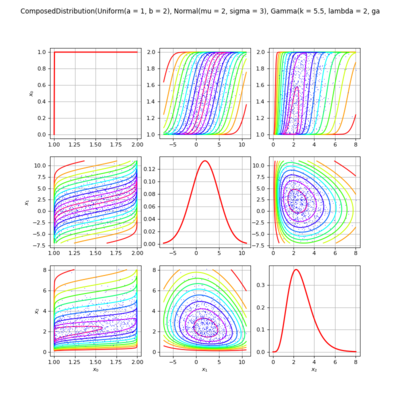

Home
Get it
Doc
Forum
Chat
Modules
Code
Bugs
OpenTURNS
An Open source initiative for the Treatment of Uncertainties, Risks'N Statistics
Navigation
index
next
|
previous
|
OpenTURNS 1.20 documentation
»
Contents
»
Examples
Previous topic
Contents
Next topic
Data analysis
This Page
Show Source
Quick search
Examples
¶
This is the examples section.
Data analysis
Manage data and samples
Sample analysis
Distribution fitting
Statistical tests
Estimate dependency and copulas
Estimate stochastic processes
Graphics
Probabilistic modeling
Distributions
Copulas
Random Vectors
Stochastic_processes

Meta modeling
General purpose metamodels
Polynomial chaos metamodel
Kriging metamodel
Fields metamodels
Reliability & Sensitivity
Central dispersion
Reliability
Reliability processes
Sensitivity analysis
Design of experiments
Functional modeling
Vectorial functions
Field functions
Link to an external code
Calibration
Least squares and gaussian calibration
Bayesian calibration
Numerical methods
General methods
Optimization
Iterative statistics
Graphs
Navigation
index
next
|
previous
|
OpenTURNS 1.20 documentation
»
Contents
»
Examples